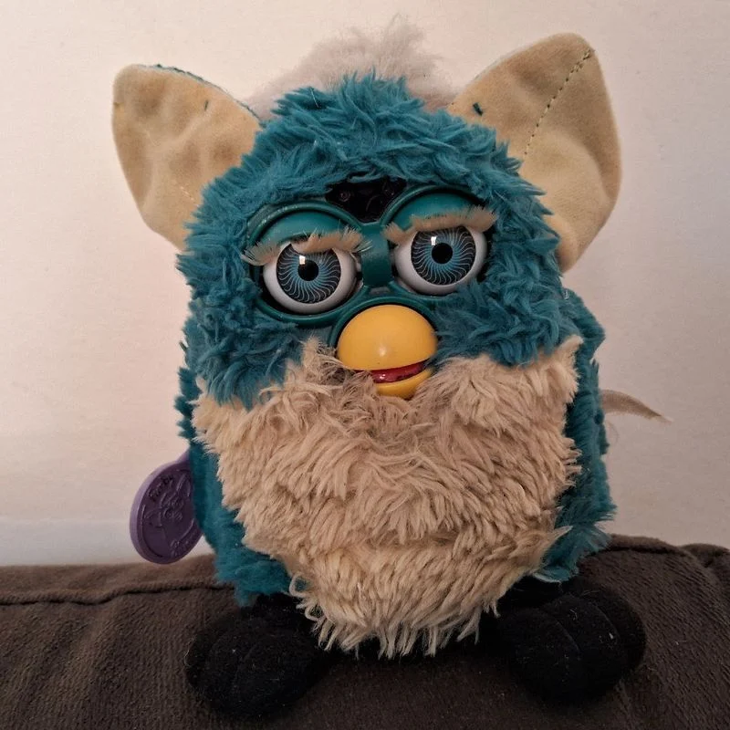
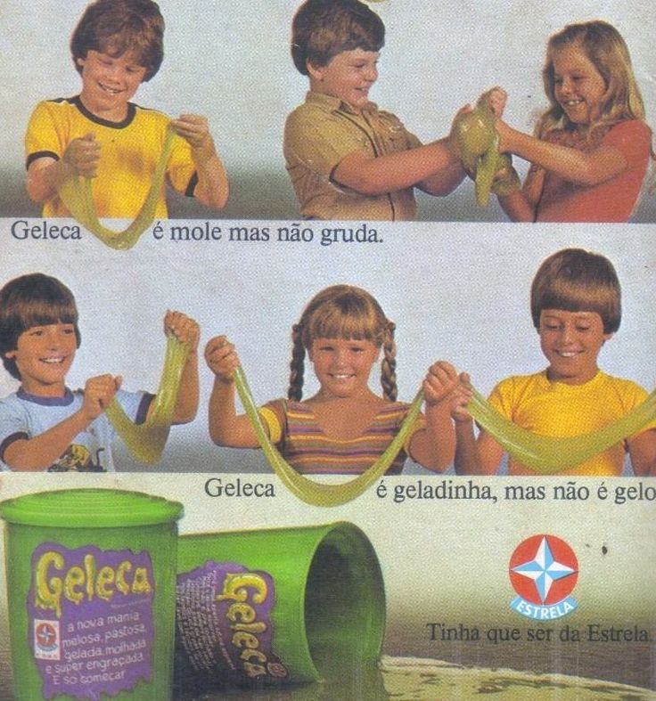
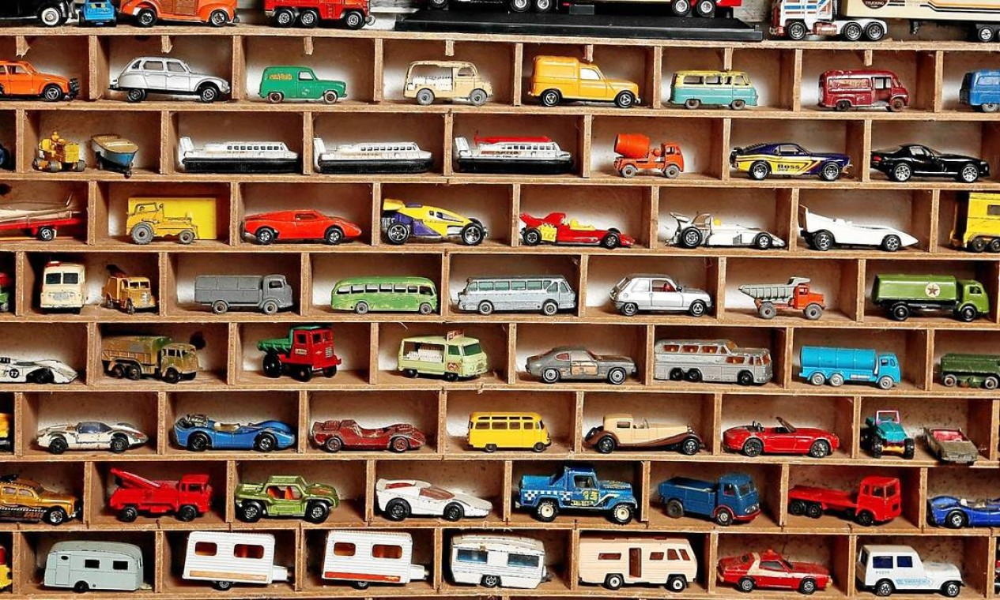

Viagem Nostálgica pelos Brinquedos
Reviva os melhores momentos da sua infância!
🏆 Top 10 Brinquedos Mais Famosos

1. Tamagotchi
O bichinho virtual que conquistou o mundo nos anos 90!

2. Pokémon
Cartas, games e desenho animado que fizeram sucesso

3. Yu-Gi-Oh
Duelo de cartas que revolucionou os intervalos escolares
🤪 Brinquedos Mais Estranhos

Furby
Bichinho robótico que "falava" e assustava os pais

Crazy Bones
Minicriaturas para jogos de empilhar e bater

Geleca
Substância grudenta que toda criança amava!
🏺 Brinquedos de Colecionador

Action Figures
Bonecos colecionáveis de super-heróis e personagens

Miniatura de Carros
Coleções de carrinhos em escalas precisas